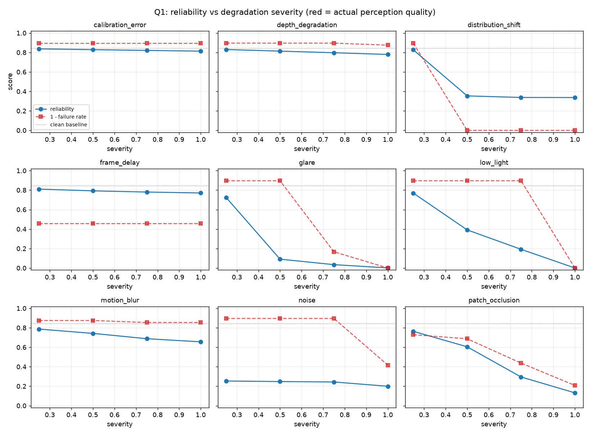
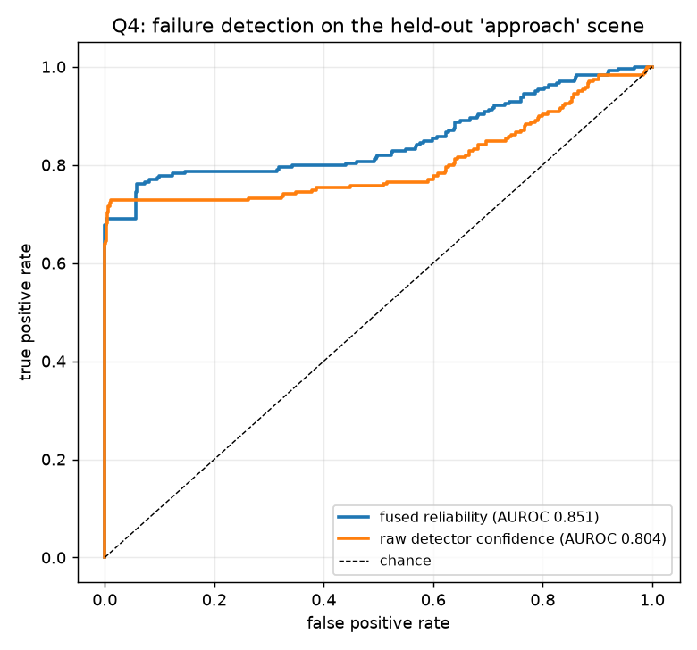
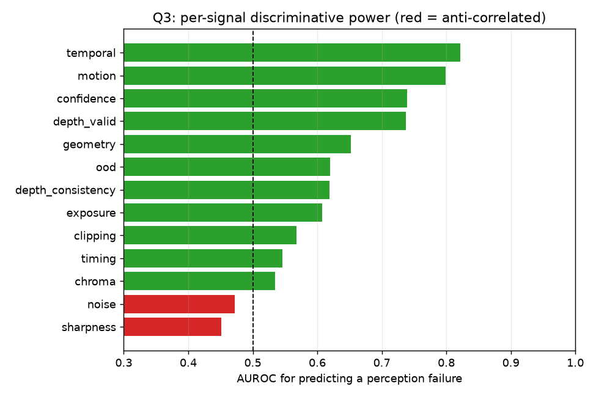
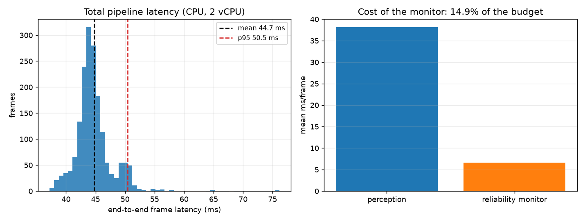

A detector that is wrong is survivable. A detector that is wrong and confident is not. PerceptionGuard runs a full RGB-D perception pipeline — detection, tracking, depth, 3D geometry — and in parallel scores its own trustworthiness from 13 independent signals, then says why.
Can an autonomous system determine, at runtime, whether its perception can currently be trusted?
That is the whole point: detector confidence was 0.94 while perception was broken. Confidence cannot see calibration drift, because the detector never looks at the calibration.
1,776 frames = 2 scenes × 24 frames × (9 degradations × 4 severities + clean).
Measured perception failure rate 0.350. Every number on this page comes from
outputs/experiments.csv; nothing is estimated or rounded up.
Trained on the multi scene, evaluated on the held-out approach scene.
Splitting by scene rather than by frame matters: consecutive frames are near-duplicates and a random
split would leak.
| Failure predictor | AUROC (held out) |
|---|---|
| Raw detector confidence | 0.804 |
| Hand-set a-priori weights | 0.851 |
| Fitted non-negative weights (deployed) | 0.984 |
| Unconstrained fit — rejected, see below | 0.971 |
| Bucket | Frames | Share | Measured failure rate |
|---|---|---|---|
| TRUSTED ≥ 0.964 | 103 | 11.6% | 0.000 |
| CAUTION 0.940–0.964 | 171 | 19.3% | 0.000 |
| DEGRADED < 0.940 | 614 | 69.1% | 0.389 |
Monotonic, and nothing inside TRUSTED actually failed on the held-out scene.
Reliability at the lowest severity of each degradation, against a clean baseline of 0.951. All nine degradations score below the TRUSTED cut at their mildest setting.
| Degradation | Score at severity 0.25 | vs clean | Actual failure rate |
|---|---|---|---|
| frame_delay | 0.802 | −0.149 | 0.54 |
| patch_occlusion | 0.873 | −0.077 | 0.27 |
| distribution_shift | 0.934 | −0.017 | 0.10 |
| calibration_error | 0.940 | −0.011 | 0.10 |
| noise | 0.941 | −0.010 | 0.10 |
| motion_blur | 0.946 | −0.005 | 0.12 |
| glare | 0.947 | −0.003 | 0.10 |
| low_light | 0.948 | −0.003 | 0.10 |
| depth_degradation | 0.950 | −0.001 | 0.10 |
Fraction of frames (severity ≥ 0.5) where the true cause appears in the top-3 diagnosis.
| Degradation | Top-3 hit rate | Verdict |
|---|---|---|
| distribution_shift | 1.00 | reliable |
| frame_delay | 1.00 | reliable |
| patch_occlusion | 0.99 | reliable |
| calibration_error | 0.98 | reliable |
| motion_blur | 0.98 | reliable |
| depth_degradation | 0.85 | usable |
| noise | 0.55 | weak |
| low_light | 0.53 | weak |
| glare | 0.49 | coin flip — open issue |
Glare and low light are entangled: both move exposure and clipping in overlapping ways, so the monitor detects that something is wrong far more reliably than which of the two it is.




This section exists because a portfolio project that reports only its wins is not engineering, it is marketing. Each of these was measured, and each survived into the final repo rather than being tuned away.
Almost two thirds of clean frames score below TRUSTED. The monitor errs toward distrust, which is the correct direction for an emergency-braking consumer, but it is high. This is an open issue, not a solved problem.
sharpness scores AUROC 0.452 and noise 0.472 — both worse than a
coin flip. Cause: the reference detector matches hue, and hue survives blur, so blur lowers
the sharpness signal without actually breaking perception. Both are clamped to zero weight and
reported rather than quietly deleted. This is specific to the colour-model backend.
Pooled across both scenes, fused reliability (0.706) looks worse than raw confidence (0.739). Per-scene and held out, it is 0.984 vs 0.804. The two scenes have different base failure rates (0.431 vs 0.269), so the pooled comparison is simply the wrong one. This was nearly written up as a negative result.
It reached 0.971 by assigning negative weights to chroma, depth consistency, exposure, noise, sharpness and temporal — learning “which scene am I in” from differing base rates rather than “is perception failing”. Non-negativity makes every weight mean more of this signal ⇒ less trust, which is the only form safe to deploy.
temporal has the highest individual AUROC (0.822) but is collinear with
motion (0.799), which the fit preferred. High individual informativeness does not imply
marginal contribution.
Building this page revealed that degradation seeding used Python's builtin hash() on a
string, which is randomized per process. noise, glare and
patch_occlusion therefore produced different corruption on every run — 187
frames disagreed. Fixed with a stable BLAKE2b seed, verified identical across processes, and the whole
evaluation chain was re-run. The playground now matches the CSV on all 1,776 frames.
RGB + depth ──▶ detect ──▶ track ──▶ lift to 3D ──▶ geometric check
│ │ │ │
└──────────┴────────────┴───────────────┴──▶ reliability monitor
│
13 signals ──▶ 4 channels ──▶ score + diagnosisThe monitor consumes four independent channels, so no single failure can silently take out every signal at once.
| Channel | Signals | What it can see |
|---|---|---|
| Appearance | sharpness, exposure, clipping, noise, chroma, ood | Image quality, distribution shift |
| Detection | confidence | Model self-report |
| Temporal | temporal, motion, timing | Frame-to-frame agreement, dropped frames |
| Geometric | geometry, depth_valid, depth_consistency | Physical consistency, calibration |
A geometric mean lets any single signal veto the frame. With a sum, twelve healthy signals can
outvote one that has collapsed to zero — exactly the failure mode a safety monitor must not have.
Because weighted geometric mean = exp(−Σ w·deficit), fitting a linear
model on log-signals yields the geometric-mean weights directly: calibration changes the weights
without changing the fusion form.
These are easy to confuse, so both are published. The standardized coefficients say which signal carries the most information per standard deviation; the deployed weights are those divided by each signal's spread and normalized, which is what actually ships.
| Signal | Standardized coefficient | Deployed weight |
|---|---|---|
| geometry | 1.855 | 0.135 |
| clipping | 1.304 | 0.478 |
| confidence | 1.154 | 0.089 |
| motion | 0.800 | 0.059 |
| timing | 0.316 | 0.232 |
| depth_valid | 0.097 | 0.007 |
| chroma, depth_consistency, exposure, noise, ood, sharpness, temporal | 0.000 | 0.000 |
The ordering flips because clipping sits at 1.000 in almost every condition:
a small spread means a large per-unit weight, so when it finally moves, it moves the score hard. Reporting
only one of these tables would misrepresent the system.
No dataset download. Scenes are rendered analytically, which gives exact ground truth for the geometry, ground truth for the degradation itself, and reproducible failure injection.
pip install -r requirements.txt
export PYTHONPATH=src
python scripts/smoke_m1.py # geometry + detection + tracking gates
python -m unittest discover -s tests # 53 tests
python scripts/run_experiments.py # 1,776-frame sweep
python scripts/calibrate_monitor.py # fit weights + thresholds
python scripts/build_site_data.py # regenerate this playground| Verification gate | Result |
|---|---|
| PnP rotation / translation / reprojection | 0.0000° / 0.0000 m / 0.0000 px |
| Depth lies on object surfaces (interior) | 0.370 px-equivalent |
| Clean detection precision / recall / F1 | 0.961 / 0.961 / 0.961 |
| Track identity stability | 1 ID per object (3/3) |
| Test suite | 53 passed |
| Playground vs measured CSV | 0 mismatches / 1,776 |
The development environment had no GPU, no network, 2 vCPU and 4 GB RAM, so the reference detector is
a deterministic colour model rather than a CNN, and no FP16/INT8/TensorRT speedup is quoted anywhere
— none was measured. TorchDetector implements the identical Detector
protocol as the swap seam, so “fusion beats confidence” must be re-measured with a real network
before it is generalized.